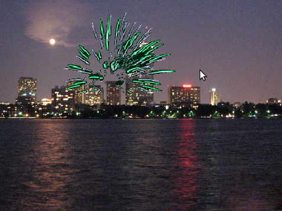
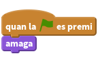
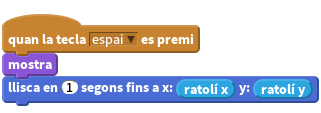
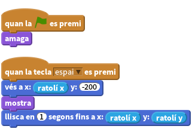
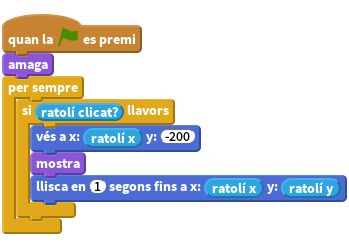
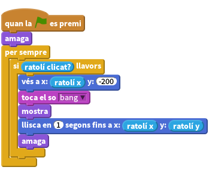
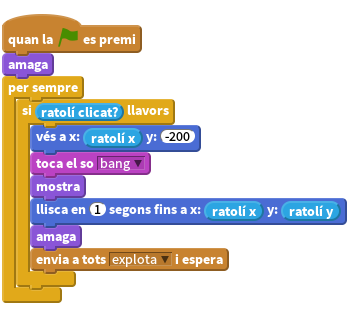
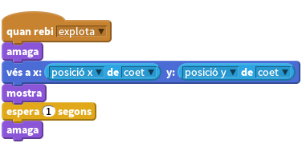
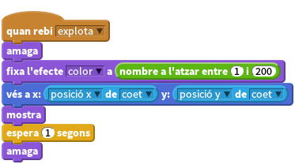
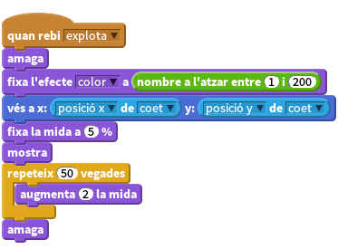

Introducció
En aquest projecte, llençarem focs artificials al cel d’una ciutat.

Pas 1: Crear un coet que vola apuntant el ratolí
Importem les imatges necessàries per al nostre joc (per fer aquest pas
cal descarregar primer el fitxer .zip de recursos associats a aquest projecte).
Llista de tasques
- Creeu un nou projecte Scratch. Esborreu el gat clicant-lo amb el botó dret i seleccionant Esborra.
- Canvieu l’escenari per outdoor/city-with-water.
- Utilitzeu el botó
escull un personatge des d'un fitxer(una carpeta amb una fletxa amunt) per afegir el personatge Coet al projecte (utilitzeu el vestit recursos/coet.png). Feu que el coet desaparegui quan es premi la bandera verda.

Ara volem que el coet apunti el ratolí quan el cliquem. Afegiu el bloc quan es cliqui la tecla espai. En aquest bloc feu que el coet aparegui i llisqui en direcció al punter del ratolí.

Proveu el projecte
Premeu la bandera verda, poseu el ratolí sobre l’escenari i premeu la tecla espai.
- Us apareix el coet movent-se en la direcció del ratolí?
- Què passa si moveu el ratolí i premeu la tecla espai una segona vegada?
Llista de tasques
Els focs artificials no es solen moure de costat a costat, o sigui que ara ens hem d’assegurar que el nostre coet llisca en direcció al ratolí sortint sempre des de la part de baix de la pantalla. Abans de mostrar el coet, utilitzeu el bloc
vés aper dir-li al coet que es mogui cap a la part baixa de la pantalla conservant la seva posició horitzontal.
Proveu el projecte
Premeu la bandera verda, poseu el ratolí sobre l’escenari i premeu la tecla espai.
- El coet vola des de la part baixa de la pantalla en direcció al ratolí?
- Què passa si moveu el ratolí i torneu a prémer la tecla espai?
Llista de tasques
Finalment, anem a veure si podem fer servir el botó del ratolí en comptes de la tecla espai. Per fer això, podem inserir un bloc
per sempre si ratolí clicat, i llavors intercanviar elquan la tecla espai es premiper unquan la BANDERA VERDA es premi. I també cal assegurar-se que al principi el coet està amagat.
Proveu el projecte
Premeu la bandera verda, i després cliqueu el ratolí sobre l’escenari. Torneu a clicar el ratolí en un altre punt.
Per saber-ne més
Intenteu canviar el moviment del coet: en comptes de lliscar recte cap on és el ratolí feu que faci una trajectòria una mica corbada.
Intenteu que alguns coets vagin més lents que d’altres.
Deseu el projecte
Pas 2: Fer explotar el coet
Llista d’activitats
El primer que us cal per fer explotar el coet és fer que soni una explosió just abans que comenci a moure’s. El so el podeu trobar a la carpeta recursos/bang.wav. Llavors es tracta que s’amagui un cop arribi on és el ratolí. Per importar un so aneu a la pestanya Sons i cliqueu el botó
Puja so des d'un fitxer.
Feu també que el coet envii un missatge quan explota. Utilitzarem aquest missatge més endavant.

Proveu el projecte
Premeu la bandera verda. Assegureu-vos que el coet toca un so i s’amaga quan arriba al ratolí.
Llista de tasques
Importeu un nou personatge des del fitxer recursos/focartificial1.png
Quan rebi el missatge “explota”, s’ha d’amagar i moure’s a la posició del coet fent servir la instrucció
vés a, després s’ha de mostrar i finalment s’ha d’amagar una altra vegada al cap d’un segon.
Proveu el projecte
Llenceu un altre coet.
- Es canvia per un personatge d’explosió quan explota?
- Què passa si manteniu el botó del ratolí clicat mentre moveu el ratolí? (No us preocupeu, ja arreglarem això més tard).
Deseu el projecte
Pas 3: Fer que cada explosió sigui única
Ara podem fer que cada explosió sigui única utilitzant el bloc
fixa l'efecte colori triant un color aleatori entre 1 i 200 abans de mostrar-lo.
Proveu el projecte
Premeu la bandera verda. Cada explosió té un color diferent?
Llista de tasques
- Afegim ara diferents vestits per l’explosió amb les imatges de recursos/focartificial2.png i recursos/focartificial3.png. Intercanvia’ls per a cada coet abans de mostrar-los.
Proveu el projecte
Premeu bandera verda.
- Cada coet té un gràfic diferent quan explota?
Llista de tasques
Finalment, fem que cada explosió creixi amb el temps en comptes que aparegui i prou. Enlloc d’esperar un segon, fixeu el tamany del personatge al 5% abans de mostrar-lo, i una vegada l’hàgiu mostrat, augmenteu el tamany en 2 unitats cinquanta vegades, utilitzant el bloc
repeteix.
Proveu el projecte
Premeu la bandera verda.
- El gràfic d’explosió d’escampa des del centre del coet i creix lentament?
Per saber-ne més
- Per què no proveu de fer encara més úniques les explosions? Proveu-ho alterant la mida i velocitat de cada explosió.
Deseu el projecte
Pas 4: Arreglar l’error de transmissió de missatges
Recordeu que abans hi havia un error quan manteníem el botó del ratolí clicat? Això passa perquè quan el coet envia el missatge que ha explotat, repetirà immediatament el bloc per sempre si ratolí clicat i enviarà un altre missatge d’explosió abans que l’anterior hagi acabat de mostrar-se.
Llista de tasques
Per arreglar-ho, s’ha de substituir el bloc
envia a totsamb un blocenvia a tots i espera. D’aquesta manera, el bloc no es repetirà fins que l’explosió hagi acabat.![quan la BANDERA VERDA es premi
amaga
per sempre
si <ratolí clicat?> llavors
vés a x: (ratolí x) y: (-200)
toca el so [bang v]
mostra
llisca en (1) segons fins a x: (ratolí x) y: (ratolí y)
amaga
envia a tots [explota v] i espera](be9925c8e8d378b04fa482f8d47eeb2ce0763fa1.png)
Proveu el projecte
Premeu la bandera verda, mantingueu apretat el botó dret del ratolí i moveu el ratolí per tot l’escenari.
- El gràfic d’explosió apareix en el lloc i el temps correcte?
Deseu el projecte
Molt bé, ja heu acabat! Ara ja podeu disfrutar del joc!
Recordeu que podeu compartir el joc amb els vostres amics i família prement a Compartir a la barra de menú!